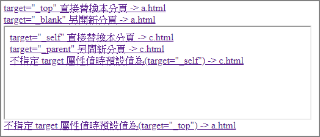
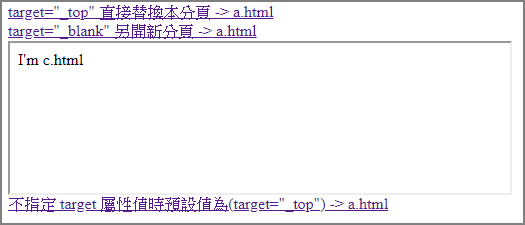

一般web上的超連結為像下面這種樣式
<!DOCTYPE html> <html> <head> <style> a:link { color: green; background-color: transparent; text-decoration: none; } a:visited { color: pink; background-color: transparent; text-decoration: none; } a:hover { color: red; background-color: transparent; text-decoration: underline; } a:active { color: yellow; background-color: transparent; text-decoration: underline; } </style> </head> <body> <a href="https://www.google.com.tw/" target="_blank">google</a> </body> </html>
一、我們可以控制超連結樣式經由以下幾種偽類與屬性
1、a:link
當超連結沒被造訪時，預設為藍色有底線
2、a:visited
當超連結被造訪過時，預設為紫色有底線
3、a:hover
當滑鼠移到超連結時，預設為藍色有底線手型指標
4、a:active
對一個超連結按住滑鼠不放時，預設為藍色有底線手型指標

注意，chrome預設為紅色有底線手型指標
5、text-decoration
預設的超連結CSS樣式為有底線，但有時後我們會因美觀需要，而把底線拿掉。
6、cursor
預設超連結hover與active的cursor CSS樣式為point，也可以更改為其他款式
二、順序
在編輯 a tag 偽類要注意順序的擺放，
:hover 一定要放在 :link 與 :visited 的後面，而 :active 則一定要放在 :hover 的後面，
如果不注意其順序的擺放，則其樣式會被之間的偽類干擾到。
三、target attribute
先準備以下範例
index.html
<html> <head> <meta charset="UTF-8"> </head> <body> <a href="a.html" target="_top">target="_top" 直接替換本分頁 -> a.html</a><br> <a href="a.html" target="_blank">target="_blank" 另開新分頁 -> a.html</a><br> <iframe src="/iframe.html" frameborder="1" width="500px"></iframe><br> <a href="a.html">不指定 target 屬性值時預設值為(target="_top") -> a.html</a><br> </body> </html>
iframe.html
<html> <head> </head> <body> <a href="c.html" target="_self">target="_self" 直接替換本分頁 -> c.html</a><br> <a href="c.html" target="_parent">target="_parent" 另開新分頁 -> c.html</a><br> <a href="c.html">不指定 target 屬性值時預設值為(target="_self") -> c.html</a><br> </body> </html>
a.html
<html> <head> </head> <body> <p>I'm a.html</p> </body> </html>
c.html
<html> <head> </head> <body> <p>I'm c.html</p> </body> </html>
說明：
1、注意，以上檔案是借由 IIS 運作，如果自己直接開啟檔案可能無法正常動作。
2、Run 起來的畫面如下圖，當然動作說明也包含在裡面了。

3、當點擊「target="_self" 直接替換本分頁 -> c.html」時，完成動作如下圖

四、使圖片成為超連結
<!DOCTYPE html> <html> <body> <a href="https://www.google.com.tw/" target="_new"> <img src="https://www.google.com.tw/images/branding/googlelogo/1x/googlelogo_color_272x92dp.png" alt="google"> </a> </body> </html>
五、有關超連結一些名詞解釋
1、什麼是anchor?
如<A href="chapter2.html">，A tag整個就是一個anchor，其中的「chapter2.html」為destination anchor
2、什麼是fragment identifier?
如http://somesite.com/html/top.html#section_2，「#」號後面的section_2就是fragment identifier或叫anchor identifier
3、什麼是anchor name?
如<A name="section_2">...</A>，的section_2則叫作anchor name
參考資料：